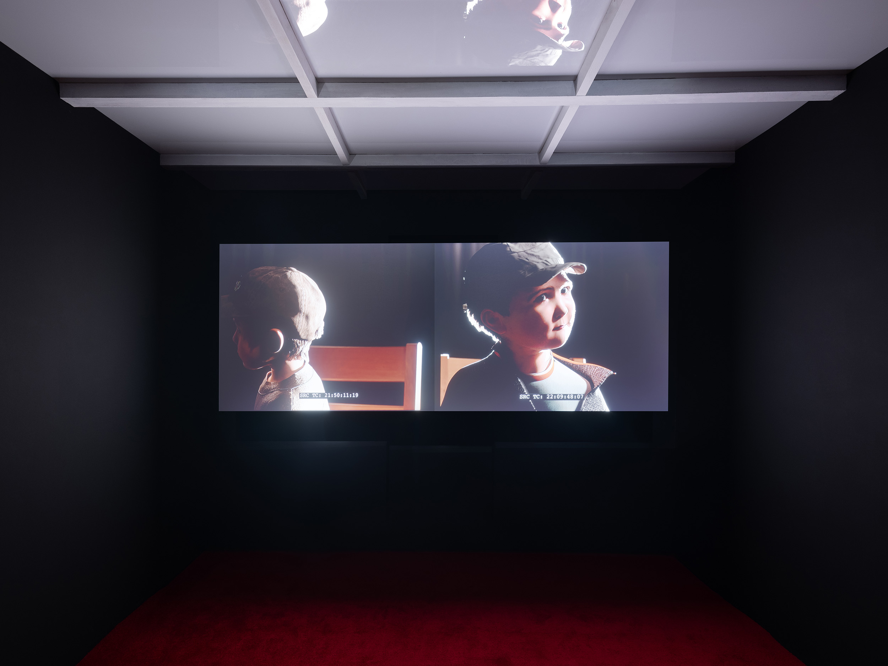
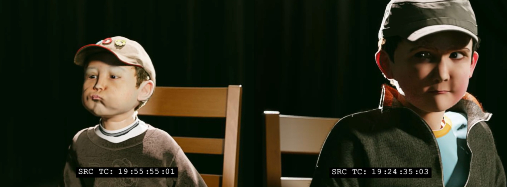
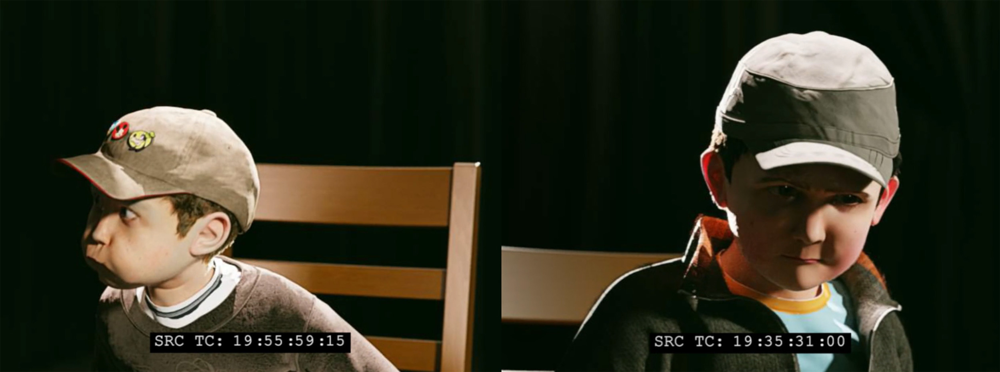
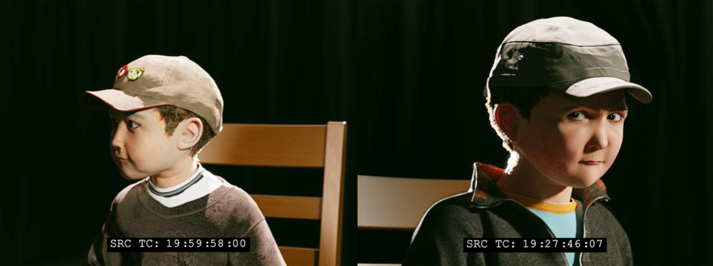

,-2025,-2-channel-video,-loop.jpg)
2024 DUMMIES, City Salts, Basel
« Allez-y, on vous écoute », salle d’audition ou d’interrogatoire ? Finalement, c’est pareil. L’adulte, dans l’expectative du témoignage, de la parole, de la déposition feinte ou sincère, observe le jeu d’acteur, lance l’enregistrement.
Depuis Home Alone jusqu’aux Kardashian, les bébés à l’écran s’étalent, compressés par le poids d’une industrie voyeuriste. La planche à billets s’écrase sur les jeunes corps potelés.
Presse, presse la p’tite orange.
L’œil lubrique du cinéma, dans la lentille de la caméra, capte et exsangue l’enfant de ses émotions, de sa vitalité. Il digère avec ses engrenages et ses processus rationalisés, l’imagination de l’intime, la vulnérabilité de ceux qui sont censés échapper à la charpente rigide du cadre professionnel.
Ensuite, le cinéma expulse de son ventre un produit qu’il est capable de vendre, de distribuer, de diffuser, pour les yeux des autres.
Le jus est mis en bouteille.
Pour éviter l’épuisement de la chaîne, on invente de nouveaux pinocchios, substituts numériques sacrifiés au crash de l’exercice de la caméra. Dans ‘Dummies’, deux êtres synthétiques et tridimensionnels sont inspectés et performent au mieux leur humanité au casting du rôle de deux frères.
Pour servir le chantier de la reconstitution d’un souvenir autobiographique de Paul Fritz, les outils du cinéma, démolissent et exploitent ce fragment. Il s’agit donc peut être ici d’une expérience qui contraint l’intime au processus d’une production rationalisée et mercantile.
Ou comment passer un peu de nous à la moulinette d’Hollywood.
Adèle Anstett for the exhibition DUMMIES





,-2025,-2-channel-video,-loop.jpg)
